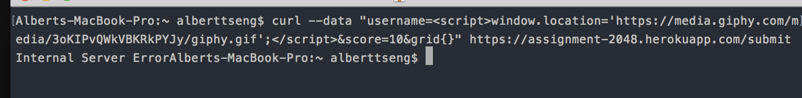
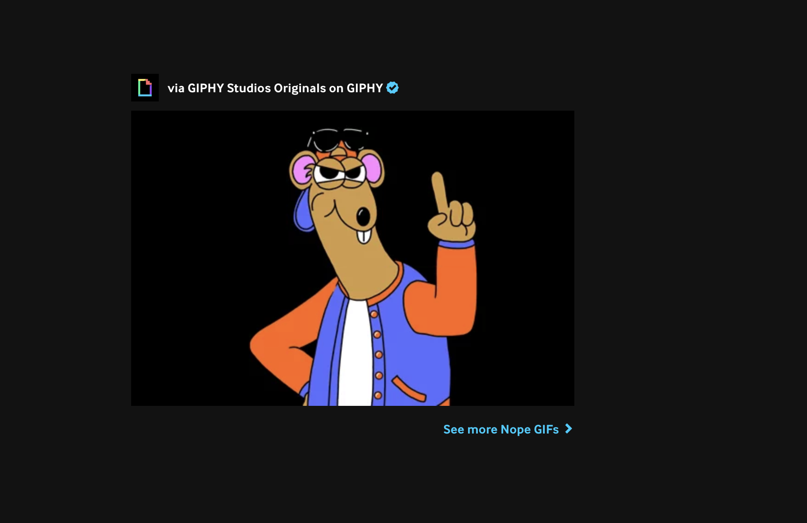

The purpose of this assignemnt was to find privacy and security issues in assignment 3 created by Manish Aryal.
In assignment 3, we created a server that accepts game grids and final scores and adds them to a colelction in
the MongoDB database we created for the popular game 2048. The assignment nothing about security so for this
assignment, I given the task to examine security vulnerabilities in his web by performing multiple attacks.
Without looking at the code, I started testing the application and trying the identify vulnerabilities by using
query strings, command curl, and source code analysis. By using curl and query strings I was able to find some
vulnerabilities and security and privacy issues.
1. Cross Site Scripting (XSS) - Attackers can replace data on the webpage
2. CORS Vulnerability - Using an asterisk allow anyone else to mount a website in public
3. Inserting HTML Vulnerability - Inserted data into the username when it's not suppose to
1. Cross Site Scripting (XSS)
I used a script and inserted this script a gif into the username. The assignment wasn't expecting a gif of an animal
to over take the entire screen and was caught by surprise. Below is the script I used to insert the gif.

This is what is looks like when I reloaded the page with the script. As you can see, the gif took over the entire page of the web server.

The severity of this issue is high because by entering a script in the username portion while curling, a hacker can overtake
an entire website. By doing this, the hacker replaces the data for a certain amount of time with the gif. The link and the XSS
vulnerability cause the script to load from an external website into the target web page. To solve this problem, it is essential
that Web applications to be developed using some form of security development lifecycle (SDL). SDL's aim is to reduce the
number of security-related design and coding errors in an application, and reduce the severity of any errors that remain undetected.
2. CORS VUlnerability
Open Web Application Security Project's list of top 10 vulnerabilities
How to Prevent XSS Attacks
CORS Vulnerabilities